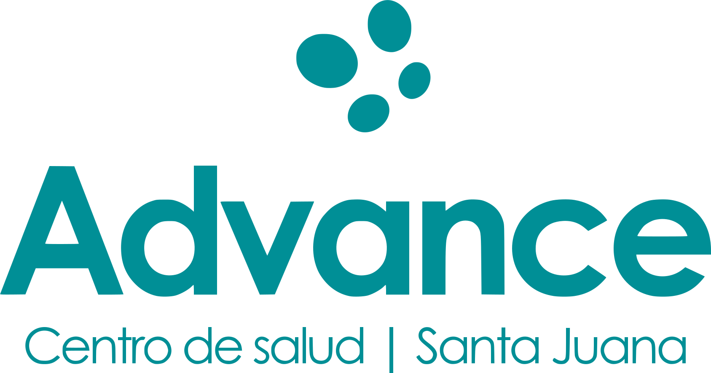
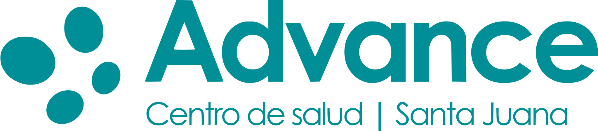
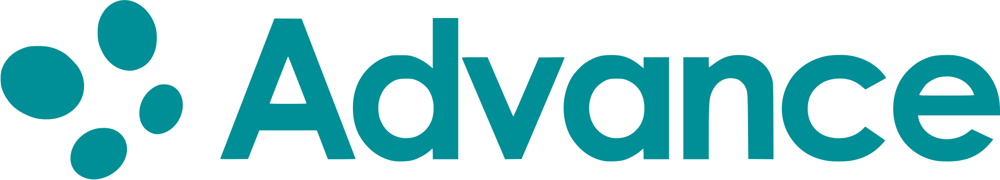
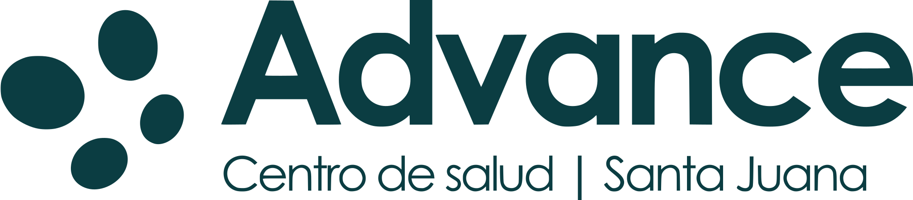
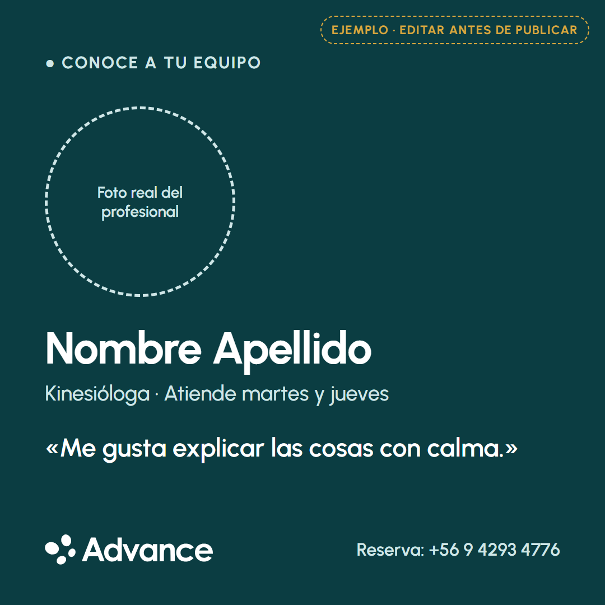
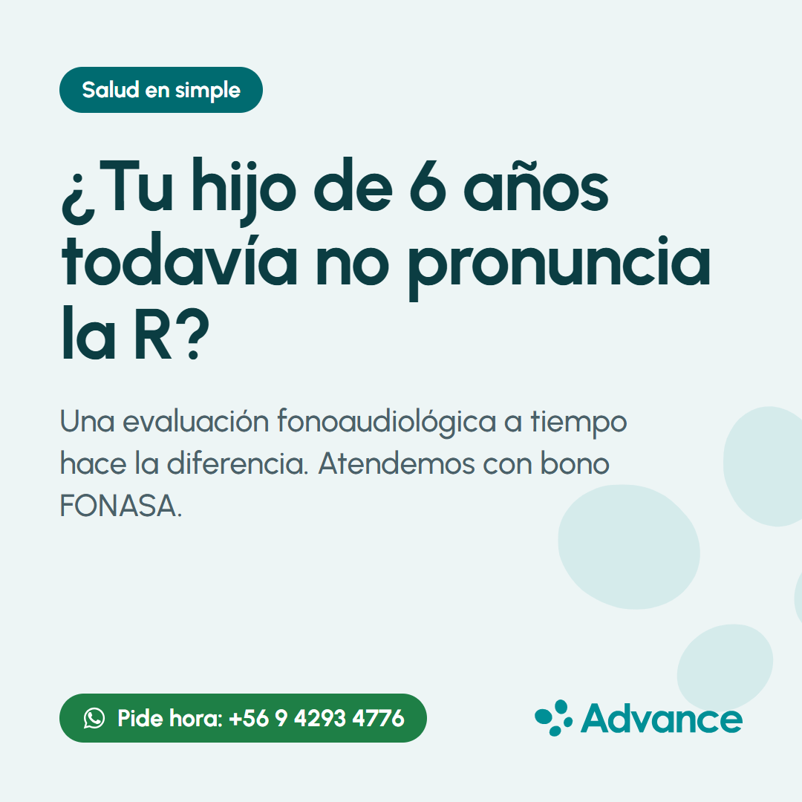
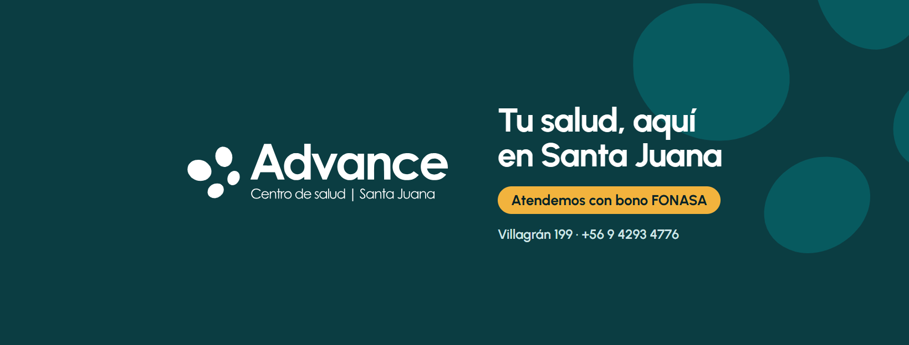
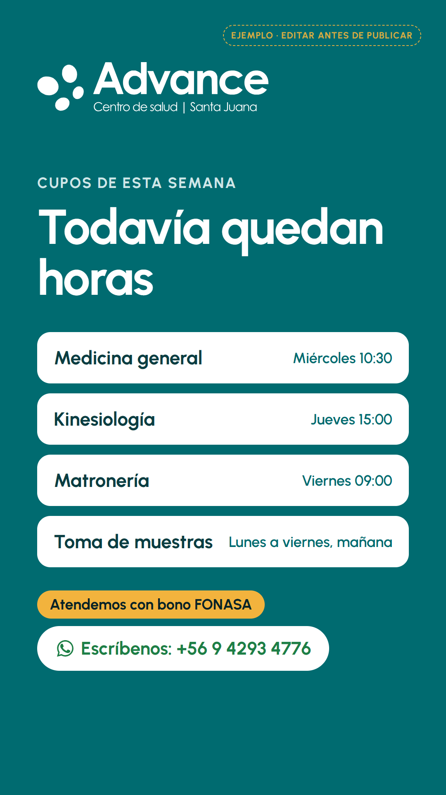
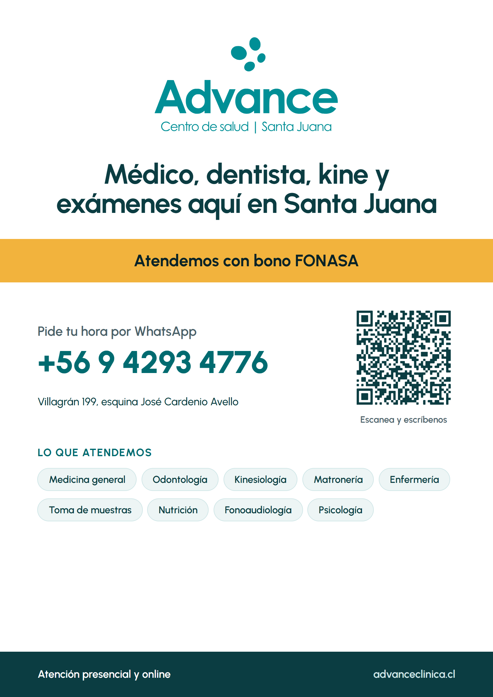

Manual de marca básico
Logotipo, colores, tipografía, voz y plantillas para usar desde hoy.
Versión 1 · octubre de 2026 · Preparado por Punto Gris para Advance · Centro de salud Santa Juana
Logotipo, colores, tipografía, voz y plantillas para usar desde hoy.
Versión 1 · octubre de 2026 · Preparado por Punto Gris para Advance · Centro de salud Santa Juana
Fortalecer la salud familiar de Santa Juana, con atención de especialistas sin salir de la comuna.
Te atendemos cerca, te explicamos claro y te acompañamos en el tiempo.
Tu salud, aquí en Santa Juana.
Servicio · Integridad · Confianza · Familiar
De confianza y cercana. El trato es cercano, formal, directo y cuidadoso. La imagen, moderna, tecnológica y profesional.
Cerca en distancia, en trato, en lenguaje y en precio (bono FONASA). Cada pieza cumple al menos una de las cuatro.
Advance · Centro de salud Santa Juana. En texto corrido basta con «Advance» o «Centro de salud Advance». No «Clínica Advance», «Advanced», «advance», «ADVANCE».
Vectorizadas desde el logotipo oficial (archivos en logo/svg y logo/png, en turquesa, tinta, blanco y negro).

Vertical (principal). Fachada, afiches, documentos y presentaciones.

Horizontal. Web, portadas, firmas de correo.

Compacto. Barras de navegación y espacios bajos, donde la bajada no se leería.
Isotipo. Foto de perfil en redes, ícono del sitio, sellos. Los cuatro puntos: familia, equipo y comunidad.
Alrededor del logo queda libre, como mínimo, el alto del punto más grande del isotipo. Nada de texto, bordes ni fotos dentro de ese margen.
Horizontal: 120 px o 30 mm de ancho. Vertical: 90 px o 22 mm. Isotipo: 24 px o 6 mm. Bajo esos tamaños, usar el compacto o el isotipo.

Sobre fotografías, solo en zonas lisas y oscuras o claras, nunca sobre caras ni detalles.
Estirarlo o aplastarlo.
Cambiarle el color. Nunca en rojo.
Rotarlo o inclinarlo.
Agregarle sombras, brillos o bordes.
Ponerlo sobre un fondo sin contraste.
Escribir el nombre con otra letra en vez del logo.
#008F96 · 0 143 150
Logo, acentos, fondos grandes. Texto blanco solo grande o en negrita.
#006B70 · 0 107 112
Botones y enlaces. Blanco encima 6,3:1.
#0B3D42 · 11 61 66
Titulares y fondos oscuros. Blanco encima 11,9:1.
#072227 · 7 34 39
Texto principal. 15:1 sobre Nieve.
#4A6169 · 74 97 105
Texto secundario. Ningún gris más claro sobre fondo claro.
#CFE6E7 · 207 230 231
Líneas, bordes, texto suave sobre la tinta.
#EDF5F5 · 237 245 245
Fondo general.
#F2B33D · 242 179 61
Solo FONASA: sello, cinta, copago. Texto en tinta.
#1E7F46 · 30 127 70
Solo WhatsApp y confirmaciones.
Sin rojo, en ninguna pieza.
El violeta #A47CFB que usa la vista previa de la web está en revisión: no usarlo en piezas nuevas hasta decidir.
Archivos: colores/paleta.css (variables para la web) y colores/paleta.json (valores para diseño). Los contrastes siguen la norma WCAG: 4,5:1 para texto normal.
Advance · Manual de marca básico6Aa
Tu salud, aquí en Santa Juana
Médico, dentista, kine, matrona, psicología y exámenes. Presencial y online, sin viajar a Concepción.
A B C D E F G H I J K L M N Ñ O P Q R S T U V W X Y Z
a b c d e f g h i j k l m n ñ o p q r s t u v w x y z · 0 1 2 3 4 5 6 7 8 9
Bold 700 para titulares · SemiBold 600 para botones y destacados · Medium 500 para textos.
Gratis en Google Fonts (fonts.google.com/specimen/Urbanist) y disponible en Canva. Si un programa no la tiene, usar Arial.
| Decimos | En vez de |
|---|---|
| Agenda tu hora por WhatsApp. | Solicite su atención a través de nuestros canales digitales. |
| Atendemos con bono FONASA. | Somos Prestador Institucional en Modalidad Libre Elección. |
| ¿Te duele la espalda hace semanas? La kine te puede ayudar. | La Kinesiología es una disciplina orientada a la evaluación del movimiento. |
| Centro de salud autorizado por la SEREMI. | Centro acreditado. (La acreditación es otro trámite, de la Superintendencia de Salud.) |
| Exámenes y consulta en una sola mañana. | Ofrecemos continuidad asistencial integral. |
En la carpeta plantillas: cada pieza tiene su HTML editable y su PNG o PDF exportado.





¿Dudas sobre una pieza? Si no habla de FONASA, no va en ámbar. Si no es WhatsApp, no va en verde.